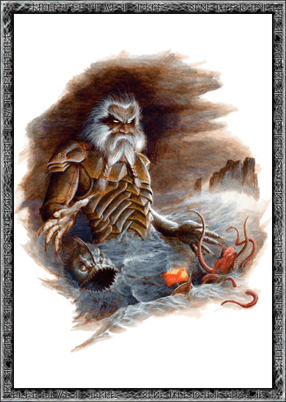
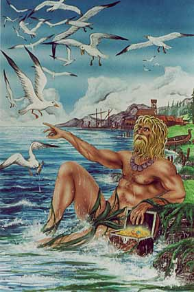
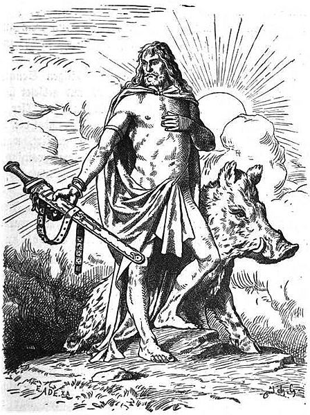

АЕГИР - бог на морето. Негова жена е морската богиня Ран.
Те имали девет дъщери - Гялп, Грейп, Ейстла, Ейргява, Ангея, Атла, Улврун, Имд и
Ярнсакса. И деветте заедно, като една същтност, са майки на Хеймдал.

НИОРД - покровител на мореплаването, на риболова, на корабостроенето
и всички морски ветрове му били подвластни. Той бил по-богат от всички ази, а като всички вани
бил много добър. Ниорд е един от дванадесетте главни богове.

УЛ (УЛЕР) - заварен син на Тор, син на Сиф. Забележителен стрелец с лък.
Стрелите му винаги улучвали целта, независимо колко голяма и колко отдалечена била. Той бил един от
дванадесетте главни богове.
ФРЕЙР (ФРЕЙ) - бог на плодородието, син на Ниорд. На Фрейр била
подвластна слънчевата светлина. Той бил могъщ и прекрасен - отстъпвал по красота само на
Балдер. Бил много добър, като баща си Ниорд и покровителствал мира на земята. Фрейр също
бил един от дванадесетте главни богове. Във времената на Рагнарок (Залезът на боговете)
бил убит от огнения великан Сурт.

ФРЕЙЯ - богиня на любовта, дъщеря на Ниорд и сестра на Фрейр.
В Асгард тя била първа богиня след Фриг. Фрейя нямала равна по красота нито всред боговете,
нито всред хората, а сърцето й било толкова добро и нежно, че съчувствала на всяко страдание.
Когато плачела, от очите й капели златни сълзи. Фрейя била също и предводителка на Валкирийте.